A data-driven shortlist of twenty candidates (age under 23, EUR 400k–2.5M) selected for psychological fit calibrated on successful CF Montréal alumni, strictly positive 12-month forecast yield, value-spike potential (v3 expectile-0.9 tail score) and complementarity with the current squad. Every candidate is simulated through 1,000 Monte Carlo paths under a base and a spike scenario — seed 42, 36 months, annual volatility 0.4688.
CF Montréal is a bridge club: it signs young players, develops them and sells them on to stronger leagues — the alumni evidence in section 3. This report ranks the top twenty candidates in the CFM scout basket (age under 23, EUR 400k to 2.5M market value) on psychological fit calibrated on successful alumni, positive 12-month yield (v2 forecast), spike potential (v3 expectile-0.9 tail score) and squad complementarity — the current squad has no left winger and only two left-backs. Every shortlisted player has strictly positive forecast yield and a tail score in the top 40% of the basket.
Ranked by combined score z(psych_fit) + 0.5·z(tail) + 0.3·z(yield) + 0.4·z(squad_fit). MC numbers are the spike run — drift = v3 expectile-0.9 tail score, seed 42, 1,000 paths, annual vol 0.4688, 36 months.
| # | Player | Club | Pos | Age | Value | Psych | Tail | 12m yield | Sofa | MC med 36m | P(≥1.5×) |
|---|---|---|---|---|---|---|---|---|---|---|---|
| 1 | Lisandro PiñeroLW | Banfield | FW | 18.9 | €400k | 0.627 | 1.12 | 68% | 6.7 | €10.48M | >99% |
| 2 | Noah TolfLB | IFK Göteborg | MF | 20.8 | €1.00M | 0.664 | 1.04 | 56% | 6.75 | €20.66M | >99% |
| 3 | Yannick GeigerCM | AIK | MF | 19.0 | €600k | 0.643 | 1.08 | 65% | 6.83 | €14.09M | >99% |
| 4 | Jeremías MerloLW | Gimnasia LP | MF | 20.0 | €700k | 0.672 | 1.02 | 50% | 6.47 | €13.87M | >99% |
| 5 | Niko SepicLB | Istra 1961 | MF | 20.3 | €400k | 0.598 | 1.06 | 61% | 6.68 | €8.91M | >99% |
| 6 | George EarthyAM | West Ham | MF | 21.8 | €1.00M | 0.641 | 1.08 | 64% | 6.6 | €23.17M | >99% |
| 7 | Alfie DorringtonCB | Aberdeen | MF | 21.1 | €500k | 0.646 | 1.12 | 68% | 6.47 | €13.15M | >99% |
| 8 | Romeo Arrhenius LeanderssonCM | Mjällby | MF | 17.9 | €600k | 0.624 | 1.08 | 62% | 6.61 | €14.04M | >99% |
| 9 | Alessandro RomanoDM | Roma | MF | 20.0 | €500k | 0.597 | 1.10 | 65% | 6.88 | €12.45M | >99% |
| 10 | Andrea NataliCB | AZ Alkmaar | DF | 18.4 | €400k | 0.619 | 1.13 | 68% | 6.76 | €10.71M | >99% |
| 11 | Tiago FreitasCM | Benfica | MF | 19.8 | €550k | 0.602 | 1.08 | 63% | 6.62 | €13.03M | >99% |
| 12 | Felipe BussioDM | Platense | MF | 22.0 | €400k | 0.644 | 1.05 | 57% | 6.6 | €8.48M | >99% |
| 13 | Andrea CogoniCB | Cagliari | MF | 19.9 | €400k | 0.617 | 1.08 | 62% | 7.02 | €9.44M | >99% |
| 14 | Wassim BouzianeLW | AZ Alkmaar | FW | 19.5 | €450k | 0.602 | 0.98 | 49% | 7.08 | €7.73M | >99% |
| 15 | Diogo FerreiraGK | Benfica | GK | 19.3 | €800k | 0.623 | 1.07 | 59% | 6.85 | €17.99M | >99% |
| 16 | Olivier MambwaLB | Young Boys | DF | 17.5 | €1.00M | 0.576 | 1.00 | 50% | 6.14 | €18.25M | >99% |
| 17 | Matija SuboticDM | Lokomotiva | MF | 18.5 | €850k | 0.599 | 1.02 | 56% | 6.67 | €16.69M | >99% |
| 18 | Matteo SpinaccèCF | Inter | FW | 19.9 | €1.00M | 0.628 | 1.05 | 58% | 6.74 | €21.18M | >99% |
| 19 | Adrian Kurd RønningAM | Kristiansund | FW | 20.2 | €450k | 0.704 | 0.93 | 43% | 6.54 | €6.76M | >99% |
| 20 | Seydou FiniRW | Genoa | FW | 20.0 | €1.00M | 0.655 | 1.01 | 53% | 7.06 | €19.16M | >99% |
From the pre-merged panel data/cfm_scout_panel.csv (14,769 rows, read-only, never re-merged) the basket filter is: age under 23 as of the 2026-06-12 TM vintage; EUR 400,000 ≤ current market value ≤ EUR 2,500,000; attr_source ≠ staff (real FM database attributes only); club not CF Montréal. The basket holds 1,255 players. Forecast (f36) coverage is 947/14,769 rows; tail (v3 spike) coverage is 7,962/14,769 — reported honestly, never zero-filled.
Success label per alumnus: success = current value / transfer fee. Alumni with success ≥ 1.5 and a fee above EUR 300k form the reference group (nine alumni); the top half by success (five alumni) is the archetype calibration set:
| Alumnus | Transfer fee | Current value | Success multiple |
|---|---|---|---|
| Joel Waterman | €430k | €2.00M | 4.65x |
| Nathan-Dylan Saliba | €2.00M | €7.50M | 3.75x |
| Aarón Herrera | €464k | €1.50M | 3.23x |
| Ismaël Koné | €8.00M | €25.00M | 3.12x |
| Raheem Edwards | €345k | €800k | 2.32x |
The archetype vector is the mean of non-missing FM attributes over these five alumni (FM26 full attrs, read-only lookup by uid):
| Determination | 11.25 |
| Bravery | 11.20 |
| Consistency | 11.80 |
| Important matches | 8.75 |
| Composure | 12.00 |
| Work rate | 12.40 |
| Teamwork | 12.00 |
| Leadership | 10.40 |
| Versatility | 10.80 |
| Natural fitness | 12.75 |
| Injury proneness | 10.33 |
Hidden personality (pressure, professionalism, ambition, adaptability, temperament, controversy) is present on roughly 32% of panel rows, but the alumni carry no usable hidden values — Koné's ambition 0 and adaptability 1 are FM placeholders outside the 1–20 scale. The hidden-attribute archetype therefore uses the documented bridge-club prior: pressure ≥ 12, professionalism ≥ 12, temperament 12, controversy ≤ 8. Injury proneness and controversy are negative (lower is better).
For each candidate and attribute the distance to the archetype is computed in z-units using the basket's per-attribute standard deviation (min 1.0):
z_dist = sqrt( mean over available attrs of ((arch[a] - v) / scale[a])^2 )
where for NEGATIVE attrs (injury proneness, controversy) the signed
distance is reversed: ((v - arch[a]) / scale[a])^2
psych_fit = 1 / (1 + exp(K · (z_dist - Z0))), K = 1.5, Z0 = 1.1
The score is computed over the intersection of available candidate attributes and archetype attributes; psy_attrs_used counts the attributes entering the score (max 15 = 11 mental + 4 hidden). The sigmoid maps the distance to [0,1] and is monotone. Sanity check: the calibration alumni themselves score 0.61–0.67 (min 0.614, mean 0.670), all at or above 0.6 as required.
Yield — positive expected appreciation: f36_gap_pct > 0 and f36_predicted_12m_mv > current_mv, both strictly required; yield_12m_pct = 100 · f36_gap_pct. Spike score — tail_tail_score, the v3 expectile-0.9 12-month log-ratio; all top-20 carry a real tail score, sit in the top 40% of the basket (≥ 0.867) and above the basket spike median (0.845). Combined rank, applied over the coverage-gated pool of 617 players:
combined = z(psych_fit) + 0.5·z(tail_score) + 0.3·z(yield_12m_pct) + 0.4·z(squad_fit)
Selection constraints: the top-20 must be above the basket psych-fit median (0.573) and spike median (0.845), have positive yield, and respect position caps — maximum three per squad slot — so the shortlist stays complementary rather than concentrated.
squad_fit = positional need + age fit + value-band fit. Positional need: left winger and left-back score 3 (the squad has zero left wingers and two left-backs); AM/CM/DM score 2; RW/RM/CF/SS/CB/RB/GK score 1 — overstocked at 6 CB, 5 CF, 4 RB, 4 RW, 3 GK. Age fit: 17–21 preferred, the MLS U22 initiative window — +2 if age under 22, else +1. Value band: EUR 400k–1.2M ideal for CFM — +2, else +1.
The deterministic Rust binary footy-mc simulates 36 monthly steps with geometric-Brownian-style value paths: seed 42 everywhere; 1,000 paths per player; annual volatility sigma_ann = 0.4688.
Base run (artifacts/cfm_mc): drift mu_ann = ln(f36_predicted_12m_mv / current_mv) — the annual log drift from the v2 mean forecaster. Spike run (artifacts/cfm_mc_spike): drift mu_ann = tail_tail_score — the v3 expectile-0.9 12-month log-ratio is the spike scenario. MC stats are terminal-36-month percentiles; P(≥1.5×), P(≥2×), P(≥3×) and downside P(< 0.5×) are probabilities from the terminal distribution.
SofaScore (primary): search api.sofascore.com/api/v1/search/all?q=<name>; identity confirmed by normalized name plus Transfermarkt date of birth — 19 of 20 exact DOB matches; Leandersson matches by club plus name, medium confidence. Season line chosen by documented rule: current season, youth national-team competitions excluded, rated lines preferred, then most appearances. Missing values stay blank. FBref (secondary): blocked — plain HTTP returns 403 and curl_cffi Chrome impersonation also returns 403 (Cloudflare); the maximum three attempts rule was respected. All twenty players are flagged fbref_unavailable = yes (Cloudflare 403).
Coverage counts: SofaScore resolved 20/20 player ids, 20/20 with high or medium confidence, 20/20 season ratings; FBref 0/20 (blocked).
All eighteen CF Montréal players who left for a fee in the TM transfers record, with transfer outcome and success multiple (current value / transfer fee). The pattern is the classic bridge-club loop: sign young, develop, sell at a multiple — Crépeau 40× and Binks 36× on tiny fees, Koné 3.1× from EUR 8M to EUR 25M at Watford and Sassuolo.
| Player | Left | To | Fee | Current value | Current club | Multiple |
|---|---|---|---|---|---|---|
| Maxime Crépeau | 2018 | Vancouver | €45k | €1.80M | Orlando City | 40.00x |
| Luis Binks | 2020 | Bologna | €97k | €3.50M | Bröndby | 36.08x |
| Ariel Lassiter | 2024 | Chicago | €68k | €500k | Portland | 7.35x |
| Jonathan Sirois | 2026 | Dallas | €127k | €800k | FC Dallas | 6.30x |
| Joel Waterman | 2025 | Chicago | €430k | €2.00M | Chicago Fire | 4.65x |
| Chinonso Offor | 2024 | Arda Kardzhali | €225k | €1.00M | FK Baltika | 4.44x |
| Nathan-Dylan Saliba | 2025 | Anderlecht | €2.00M | €7.50M | Anderlecht | 3.75x |
| Amar Sejdić | 2021 | Atlanta | €91k | €300k | Columbus | 3.30x |
| Aarón Herrera | 2023 | D.C. United | €464k | €1.50M | D.C. United | 3.23x |
| Ismaël Koné | 2023 | Watford | €8.00M | €25.00M | Sassuolo | 3.12x |
| Raheem Edwards | 2018 | Chicago | €345k | €800k | Toronto FC | 2.32x |
| Alistair Johnston | 2023 | Celtic | €3.50M | €8.00M | Celtic | 2.29x |
| Djordje Mihailovic | 2023 | AZ Alkmaar | €3.00M | €5.50M | Toronto FC | 1.83x |
| Caden Clark | 2025 | D.C. United | €600k | €1.00M | D.C. United | 1.67x |
| George Campbell | 2025 | West Brom | €1.30M | €2.00M | West Brom | 1.54x |
| Dante Sealy | 2025 | Colorado | €1.60M | €1.50M | Colorado | 0.94x |
| Mathieu Choinière | 2024 | Grasshoppers | €900k | €800k | LAFC | 0.89x |
| Rudy Camacho | 2023 | Columbus | €400k | €150k | Columbus | 0.38x |
Current squad of 33 players: mean age 24.2, range 16.9–32.8, total squad value EUR 37.65M. Left winger is the number-one gap; left-back is number two (the age profile is old at the position); AM, CM and DM are medium priority. The shortlist fills gaps in order: LW ×3, LB ×3, CM ×3, DM ×3, CB ×3, AM ×2, GK/CF/RW ×1 each.
| Sub-position | Count | Assessment |
|---|---|---|
| Left winger | 0 | Critical gap — no left winger in the squad |
| Left-back | 2 | Gap — both 26+ (Petrasso 26.0, Pearce 28.2) |
| Centre-back | 6 | Overstocked |
| Centre-forward | 5 | Overstocked |
| Right-back | 4 | Stocked |
| Right winger | 4 | Stocked — Synchuk 19.9 only young option |
| Attacking midfield | 3 | Medium — Jaime 25.7, Carmona 23.3, Escobar 19.8 |
| Central midfield | 3 | Medium |
| Defensive midfield | 3 | Medium — Piette 31.6 |
| Goalkeeper | 3 | Low need — Gillier 22, Breza 28, Keita 16.9 |
Full per-player Monte Carlo fan charts (spike and base runs), psych profile, SofaScore season line and squad-fit rationale. Spike run uses the v3 expectile-0.9 tail score as annual drift; base run uses the v2 forecast. Both runs share seed 42, 1,000 paths, annual vol 0.4688, 36 months. Model scores are not guarantees — see limitations on the final page.
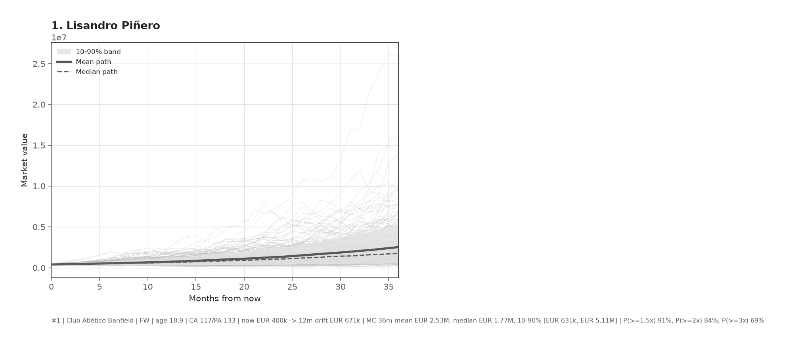
18.9-year-old left winger out of Banfield with the strongest combined score; consistent and composed, fits the LW gap exactly and sits in the U22 window. · squad_fit 7 (gap LW) · Liga Profesional de Fútbol, Primera LPF 2026 · confidence high · FBref unavailable (Cloudflare 403)
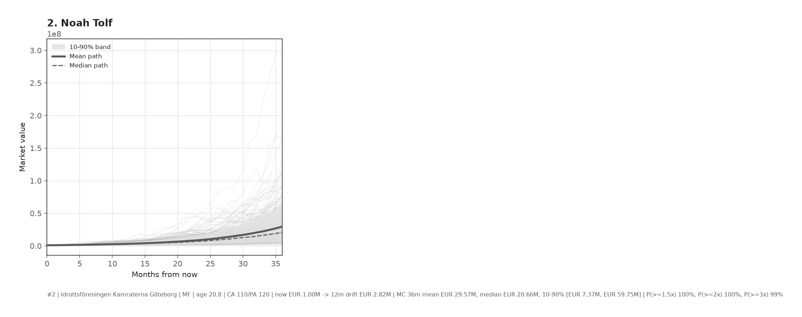
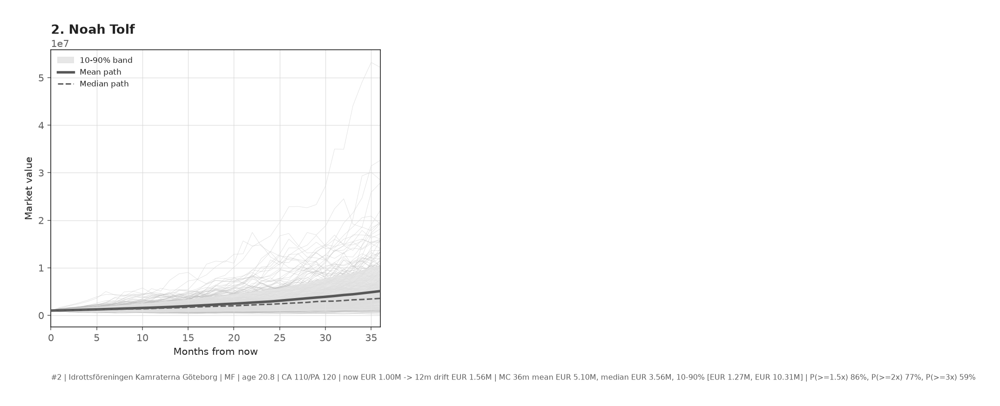
IFK Göteborg left-back with 29 Allsvenskan starts last season; high natural fitness and teamwork, fills the old LB spot at 20.8. · squad_fit 7 (gap LB) · Allsvenskan, Allsvenskan 2026 · confidence high · FBref unavailable (Cloudflare 403)
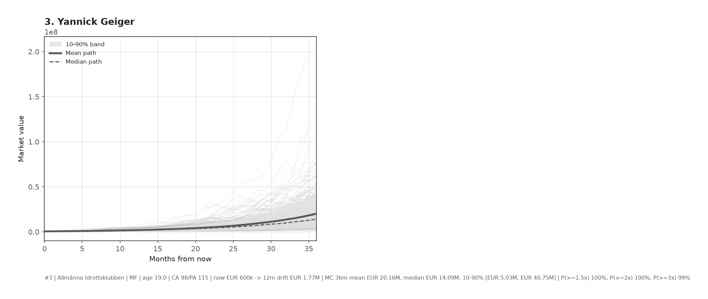
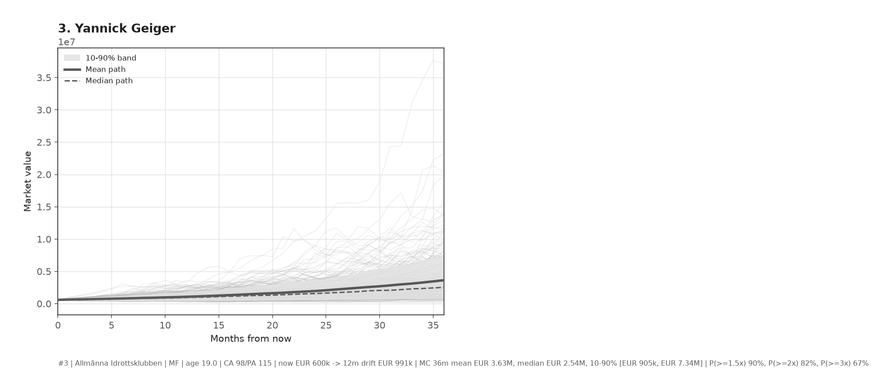
AIK central midfielder, determination 14; cheap, high-yield, U22 CM depth for the bridge pipeline. · squad_fit 6 (gap CM) · Allsvenskan, Allsvenskan 2026 · confidence high · FBref unavailable (Cloudflare 403)
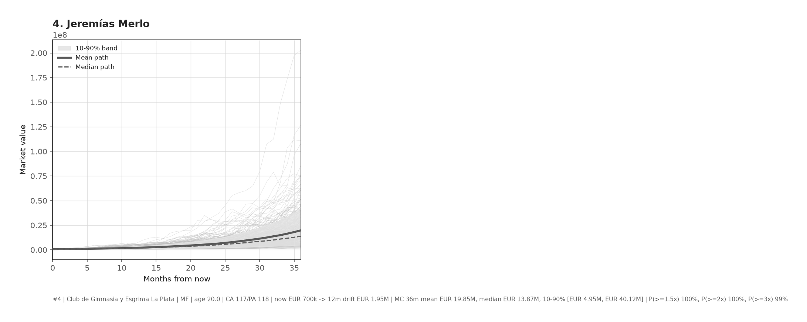
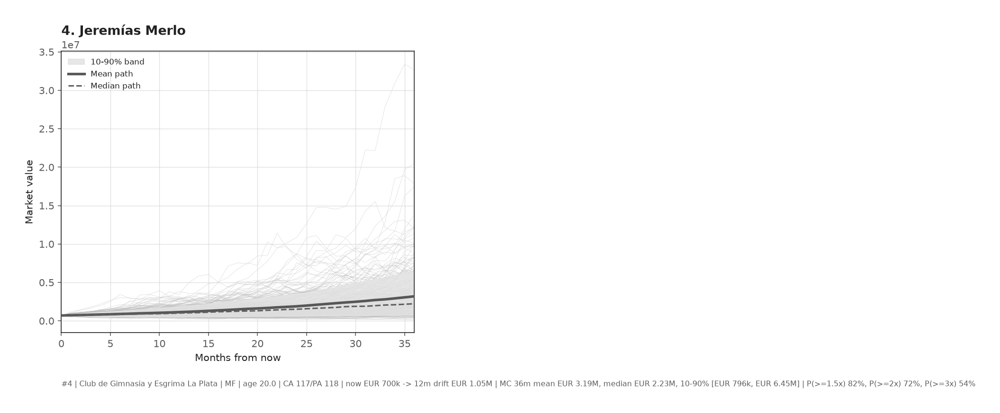
Gimnasia left winger, balanced mental profile; second LW option, U22 initiative eligible. · squad_fit 7 (gap LW) · Liga Profesional de Fútbol, Primera LPF 2026 · confidence high · FBref unavailable (Cloudflare 403)
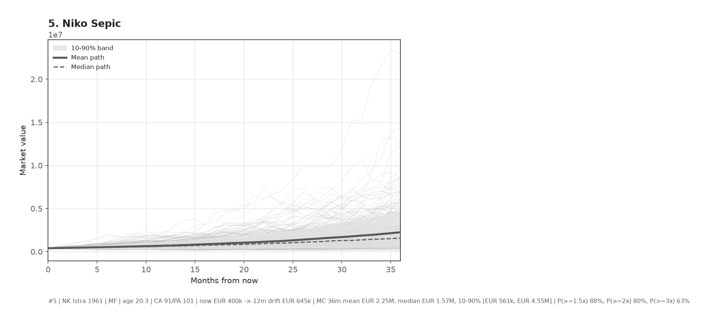
Istra 1961 left-back, 13 HNL starts at 20.3; high work rate and fitness, second LB option. · squad_fit 7 (gap LB) · HNL, HNL 25/26 · confidence high · FBref unavailable (Cloudflare 403)
West Ham academy product on loan with 10 Championship apps; versatile AM with good composure; the AM/10 slot behind the forwards. · squad_fit 6 (gap AM) · Championship, Championship 25/26 · confidence high · FBref unavailable (Cloudflare 403)
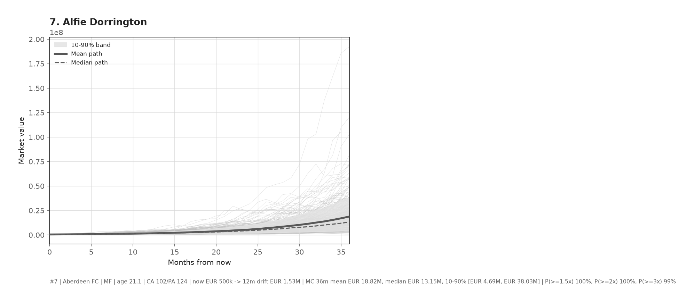
Tottenham loanee at Aberdeen, CB with determination 15; premium long-term CB asset at EUR 500k. · squad_fit 5 (gap CB) · League Two, League Two 25/26 · confidence high · FBref unavailable (Cloudflare 403)
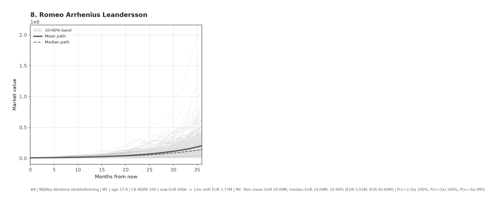
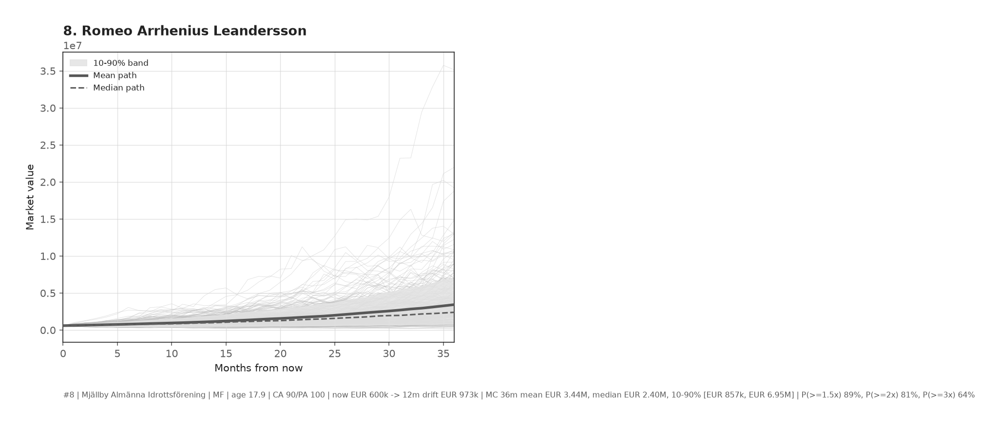
17.9-year-old Mjällby central midfielder; the youngest CM in the list, fits the U22 window perfectly. · squad_fit 6 (gap CM) · Allsvenskan, Allsvenskan 2026 · confidence medium · FBref unavailable (Cloudflare 403)
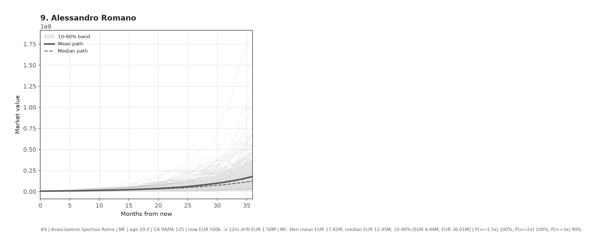
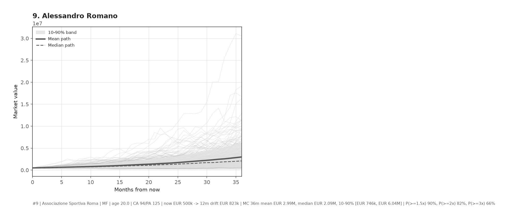
Roma youth product on loan at Spezia with 19 Serie B apps; high ImportantMatches, DM depth at 19.9. · squad_fit 6 (gap DM) · Serie B, Serie B 25/26 · confidence high · FBref unavailable (Cloudflare 403)
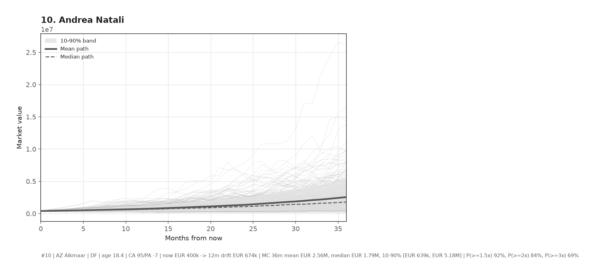
AZ's 18.4-year-old CB with 11 Eerste Divisie starts; determination 15, archetype-adjacent, cheap CB option. · squad_fit 5 (gap CB) · Eerste Divisie, Eerste Divisie 25/26 · confidence high · FBref unavailable (Cloudflare 403)
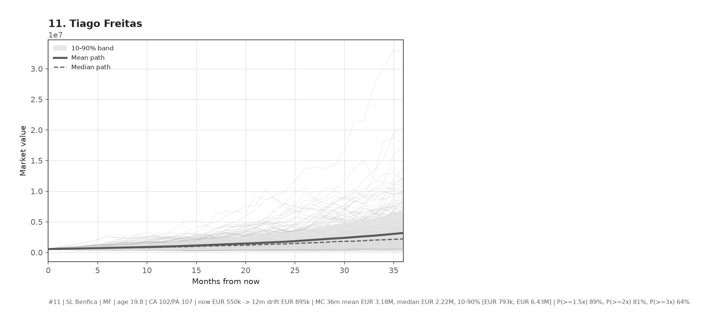
Benfica B central midfielder with 22 Liga Portugal 2 apps; high natural fitness and consistency. · squad_fit 6 (gap CM) · Liga Portugal 2, Liga Portugal 2 25/26 · confidence high · FBref unavailable (Cloudflare 403)
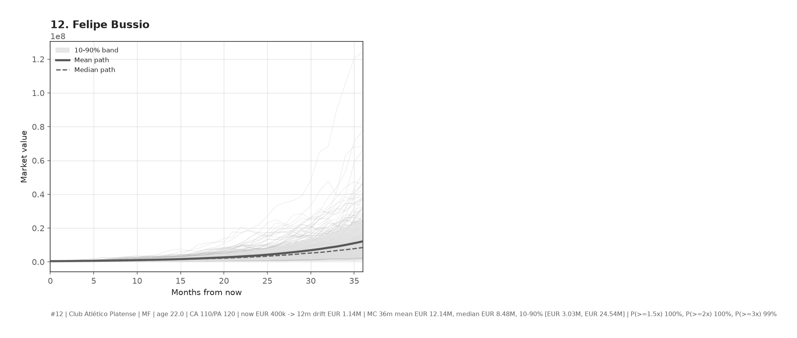
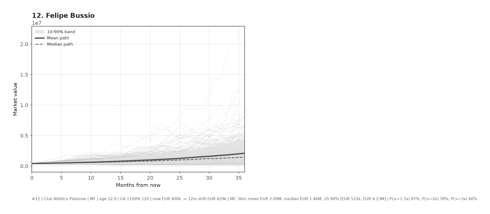
Platense DM with 11 LPF starts; team-first profile (teamwork 14) for the holding slot. · squad_fit 6 (gap DM) · Liga Profesional de Fútbol, Primera LPF 2026 · confidence high · FBref unavailable (Cloudflare 403)
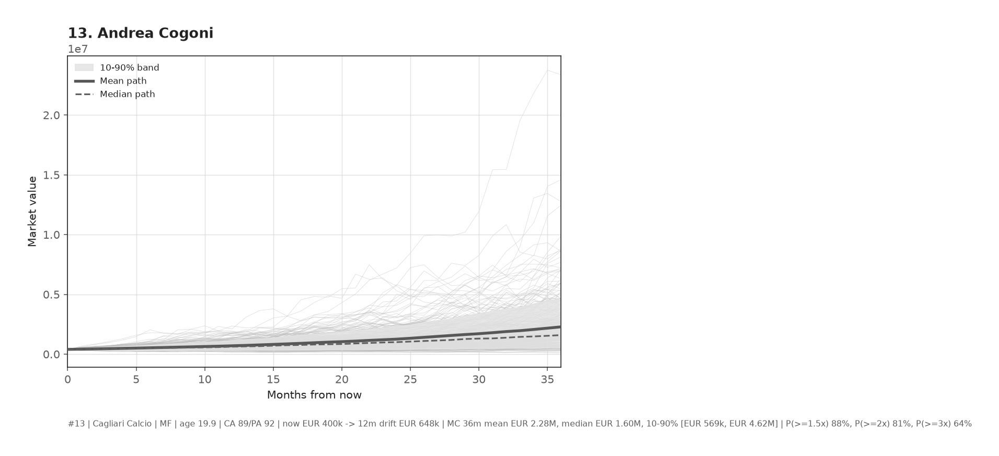
Cagliari youth CB with 30 Primavera apps and a 7.02 rating; ImportantMatches 15. · squad_fit 5 (gap CB) · Campionato Primavera 1, Primavera 1 25/26 · confidence high · FBref unavailable (Cloudflare 403)
AZ left winger with 20 Eerste Divisie apps, 4 goals and 3 assists (7.08 rating); direct LW cover. · squad_fit 7 (gap LW) · Eerste Divisie, Eerste Divisie 25/26 · confidence high · FBref unavailable (Cloudflare 403)
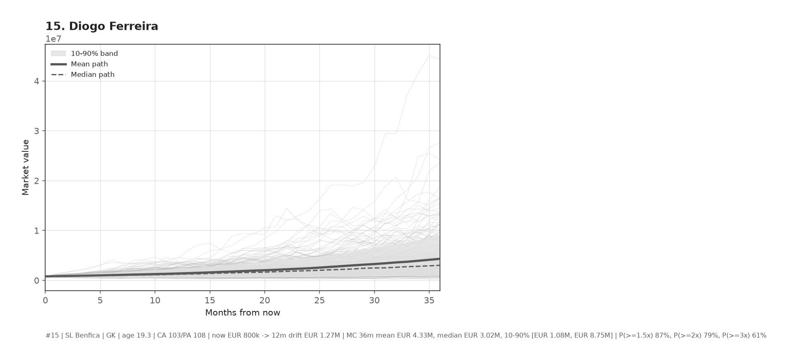
Benfica B goalkeeper with 26 Liga Portugal 2 apps at 6.85; long-term GK succession behind Gillier. · squad_fit 5 (gap GK) · Liga Portugal 2, Liga Portugal 2 25/26 · confidence high · FBref unavailable (Cloudflare 403)
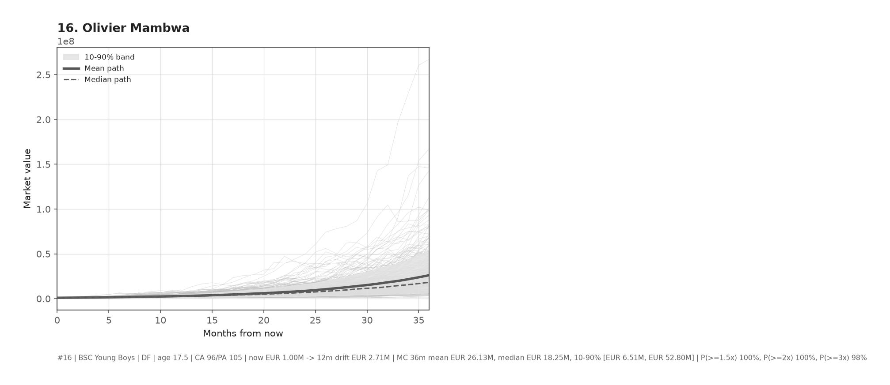
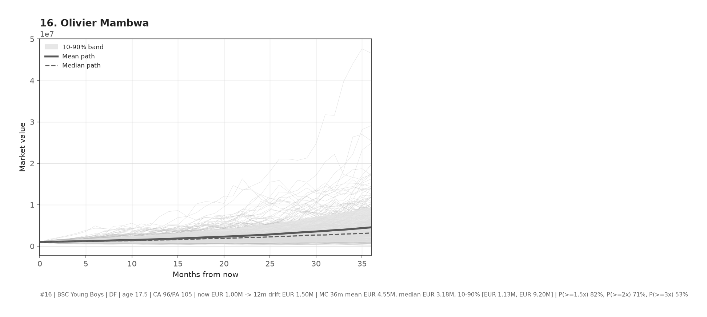
17.5-year-old Young Boys U21 left-back already with 7 Super League apps; the youngest LB prospect. · squad_fit 7 (gap LB) · Swiss Super League, Super League 25/26 · confidence high · FBref unavailable (Cloudflare 403)
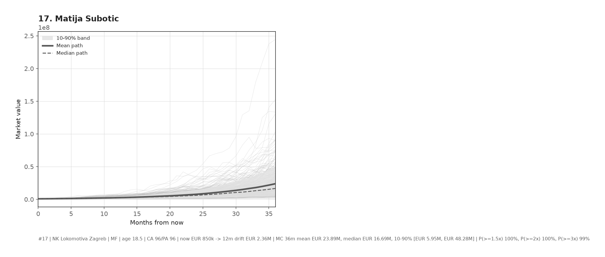
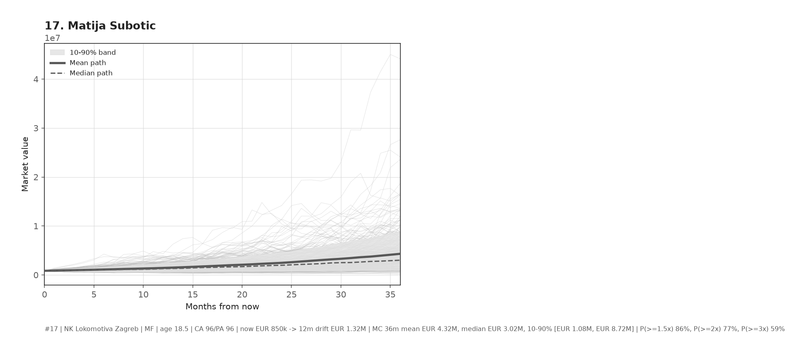
Lokomotiva Zagreb DM with 32 HNL apps; versatile with high composure, DM depth. · squad_fit 6 (gap DM) · HNL, HNL 25/26 · confidence high · FBref unavailable (Cloudflare 403)
Inter youth striker on loan at Mantova, 6 goals in 26 Serie C starts; U22 CF option despite CF stock. · squad_fit 5 (gap CF) · Serie C, Girone A, Serie C, Group A 25/26 · confidence high · FBref unavailable (Cloudflare 403)
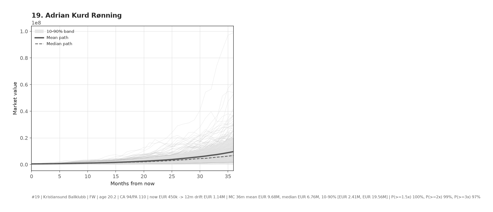
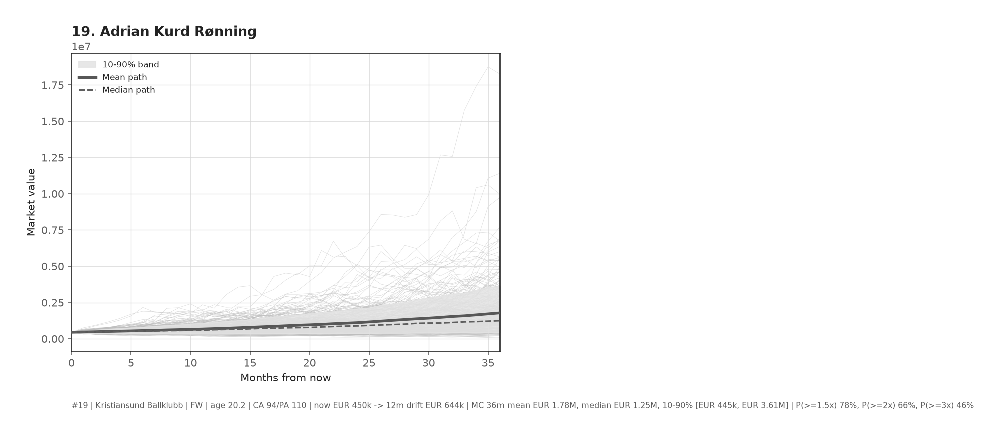
Kristiansund attacking midfielder with 16 Eliteserien apps; the highest psych fit in the list (0.704). · squad_fit 6 (gap AM) · Eliteserien, Eliteserien 2026 · confidence high · FBref unavailable (Cloudflare 403)
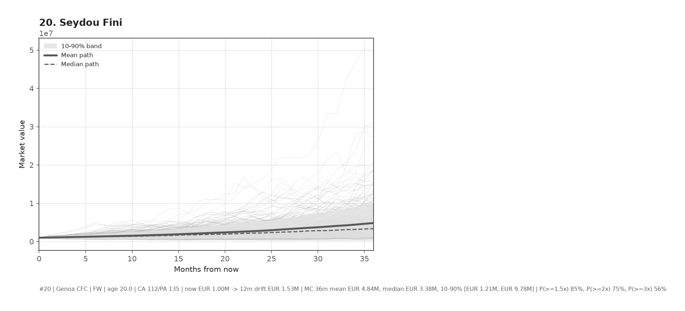
Genoa winger on loan at Frosinone, 1 goal and 1 assist in 8 Serie B apps at a 7.06 rating; RW succession. · squad_fit 5 (gap RW) · Serie B, Serie B 25/26 · confidence high · FBref unavailable (Cloudflare 403)
Generated by the CFM scouting pipeline (STEERING_CFM.md) · seed 42 · models unchanged (hashes on page 5) · all figures in EUR · as-of vintage: TM 2026-06-12, FM26 attrs Nov 2025, SofaScore Aug 2026. Typeface: SF Pro Text body, New York titles.